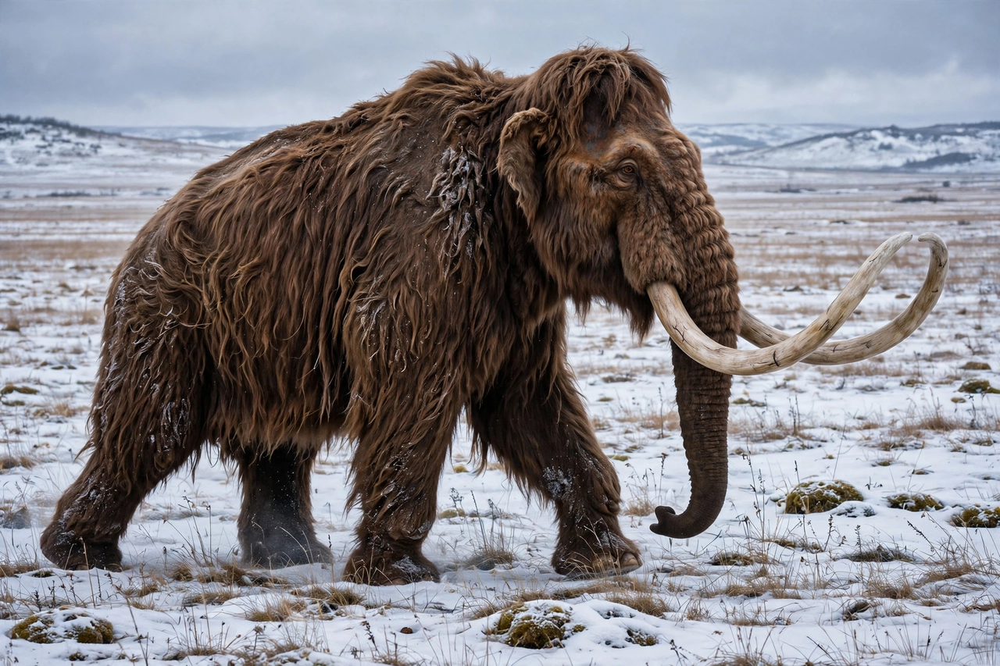

| Woolly mammoth | |
|---|---|
| Scientific name | Mammuthus primigenius |
| Order | Proboscidea |
| Family | Elephantidae |
| Period | Pleistocene – early Holocene (~400,000–4,000 years ago) |
| Height | 2.7–3.4 m at the shoulder |
| Mass | ~6 tonnes (bulls) |
| Range | Northern Eurasia and North America (mammoth steppe) |

The woolly mammoth (Mammuthus primigenius) is an extinct species of mammoth that lived during the Pleistocene until its extinction in the Holocene epoch. It was one of the last in a line of mammoth species, diverging from the steppe mammoth about 800,000 years ago in Siberia; its closest extant relative is the Asian elephant. The appearance and behaviour of this species are among the best known of any prehistoric animal because of the discovery of frozen carcasses in Siberia and Alaska, as well as skeletons, teeth, stomach contents, dung, and depiction in prehistoric cave paintings.
Adapted to the cold, the woolly mammoth had long, shaggy outer hair over a thick underwool, a layer of fat up to 10 cm thick, small ears and a short tail to minimise frostbite and heat loss, and a high, domed head with a fatty hump. Its tusks — modified incisors — grew throughout life in a spiral, reaching over 4 metres in large bulls, and were used for sweeping snow aside to reach vegetation, for display and for fighting. Its molars had numerous enamel ridges suited to grinding coarse grasses and sedges of the mammoth steppe. Genetic studies show its blood haemoglobin was adapted to release oxygen efficiently in cold tissues, and coat colour varied from dark brown to blond.
Like modern elephants, woolly mammoths probably lived in matriarchal herds of related females and calves, with adult bulls solitary or in loose bachelor groups. Stomach contents and dung show a diet of grasses, sedges, herbs, shrubs and mosses, varying seasonally across the steppe-tundra. Cave art at sites such as Rouffignac and Chauvet, and portable carvings, testify that Pleistocene humans observed mammoths closely, hunted them, and built dwellings from their bones at sites in Ukraine and Siberia.
Most woolly mammoth populations disappeared at the end of the Pleistocene, about 11,700–10,000 years ago, as the climate warmed, the mammoth steppe fragmented, and human hunting pressure grew; the relative weight of climate and hunting remains debated. Isolated island populations survived far longer: on St. Paul Island, Alaska, until about 5,600 years ago, and on Wrangel Island in the Siberian Arctic until about 4,000 years ago — making mammoths contemporaries of the early Egyptian and Mesopotamian civilisations. Genomic studies of the last Wrangel mammoths reveal accumulated harmful mutations ("genomic meltdown") in the final, tiny population.
Exceptionally preserved carcasses — including the calves Dima, Lyuba and Yuka — have yielded soft tissues, DNA, and even attempts at recovering blood cells. The woolly mammoth genome was substantially sequenced in 2008 and a high-quality genome published in 2015. Since 2021, the company Colossal Biosciences has pursued a controversial "de-extinction" project aiming to engineer Asian elephants with mammoth traits (hair, fat, cold-adapted haemoglobin) using CRISPR gene editing, producing what proponents call a cold-resistant elephant rather than a true mammoth.